§0 · 卷首摘要
一次关闭 ≠ 已经“学会”
02 只解决 Agent 接案后的可控能力改进：缺口经人工核实、隔离验证和管理审批，才变成可复用能力。
回答什么问题。01 经营事件循环解决“这一次问题怎么处理”，并承担成案前语义问题的在线处置——01 的完整机制见 01 报告。02 能力进化循环只解决 Agent 接案后的可控能力改进：为什么 Agent 在这次案件中没有按预期调查？这次暴露出的 Skill、Prompt、MCP 或工作流缺口，怎样经过人和机器共同验证，变成可复用的 Agent 能力？本方案设计判断
进入条件。02 只接收已经形成完整关闭记录的案件：成功解决、合法例外、系统误报三类正式关闭；执行完成、待结果验证、未解决专项协作、已知悉暂不处理、风险接受五类打开状态仍属 01，不能提前进入。本方案设计判断
主链一句话。每个正式关闭案件都完整复盘 → 交互式复盘报告 → FDE 与一线专家人工核实（四分支）→ 诊断与现实补全 → 隔离试验与三道检验 → 隔离验证闸门 → 管理审批（批准 / 暂缓 / 驳回）→ 候选 Agent 能力版本回 01 受控运行 → 案件关闭后再进 02 → 沉淀继续使用或回滚返回诊断。本方案设计判断
边界一句话。02 不把不能修改的底层能力伪装成可迭代的项目资产；本方案不写“自动学习”，不设自动认定标准。本方案设计判断
| 关键事实 | 取值 | 依据 |
|---|---|---|
| 唯一入口 | 正式关闭案件（三类） | 五类打开状态仍属 01，不能提前进入 本方案设计判断 |
| 复盘方式 | 每案完整复盘 | 独立复盘 Agent + 专用复盘 Skill；不设初筛 本方案设计判断 |
| 人工核实分支 | 4 个 | 保存记录 / 转 01 / 提交平台方 / 能力异样线索 本方案设计判断 |
| 三道检验 | 回放 · 留出 · 审查 | 过隔离验证闸门才允许提交管理层 本方案设计判断 |
| 审批出口 | 3 个 | 批准 / 暂缓 / 驳回；暂缓与驳回都保留原始记录 本方案设计判断 |
| 参与角色 | 5 类 | 复盘 Agent / FDE·方案团队 / 一线 / 管理层 / 工程·平台 本方案设计判断 |
| 待企业验证项 | 10 项 | 见 §8 清单，全部为 unknown 待企业验证 |
事实标记约定。正文关键事实主张按五类标注——圣农公开事实官方技术依据行业验证经验本方案设计判断待企业验证。未标注的判断均为方案内部的逻辑陈述。
总原则。本报告是 02 能力进化循环的试点设计（logic_final / pilot_design），不代表复盘 Skill、版本库、隔离环境或发布回滚平台已建成。
§1 · 问题与纪律
为什么不能“自动学”
三类原因分不清，就会被放大成稳定错误；所以先分路由，再谈改进。
1.1 三类原因分不清，就会放大成稳定错误
一次案件没有按预期调查，可能来自三类完全不同的原因：项目可控的能力缺口（Skill、Prompt、MCP、工作流配置）、源数据与语义层问题（源系统事实错误、语义映射或事件解析出错）、底层平台缺陷（飞书 / Aily / 豆包本身不可修改的问题）。如果不加区分地让系统“自己调整”，语义错误会被当成 Agent 缺陷去改配置，平台缺陷会被当成项目资产去“迭代”——同一类错误会以更稳定的形式反复出现。本方案设计判断
因此 02 先立纪律：本方案不写“自动学习”。每个真实案件留下的是可审计的证据；系统不设自动认定标准，也不自动宣布能力缺陷——复盘 Agent 只提供报告和初步线索，能力问题由 FDE 与一线专家人工核实。本方案设计判断
1.2 02 内处理什么：Agent 接案后、项目可控的能力缺口
本循环只处理经营事件包已经交给 Agent 之后、项目团队能够修改或配置的能力缺口：本方案设计判断
02 内处理（Agent 接案后、项目可控的能力缺口）： · Skill 漏查或扩大过早 · Skill 中的证据清单、查询顺序、停止条件或转人工条件不完整 · Prompt 或项目可配置的 Aily 工作流设置导致调查路径错误 · MCP 工具的参数、返回状态、权限或重试处理不正确 · 案件状态、证据写入或人工补证协作没有被 Agent 正确使用
1.3 02 不修复什么：三类问题各回各家
不在本循环内修复： · 源系统事实错误或未同步 → 回到 01 的失败处置和人工修复路径 · 语义映射、异常检测规则、事件解析、经营事件包错误 → 回到 01 · 飞书 / Aily / 豆包底层平台本身的不可修改缺陷 → 保留证据、评估影响、提交平台方
完整复盘是信息处理要求，不代表每个案件都会生成改进版本；认为可能存在问题，才建立隔离环境重新验证，其余结论各自保存并路由，不在 02 内越界修复。三路由的分工细则见 §4。本方案设计判断
§2 · 进入条件
只有正式关闭案件才能进入
三类正式关闭是 02 的唯一入口；五类打开状态仍属 01，不能提前进入。
能力进化循环只接收已经形成完整关闭记录的案件。本方案设计判断
| 状态 | 归属 | 说明 |
|---|---|---|
| 成功解决 | 02 入口 | 经营目标验证达成，正式关闭后进入完整复盘 |
| 合法例外 | 02 入口 | 信息完整后由授权负责人确认，正式关闭后进入完整复盘 |
| 系统误报 | 02 入口 | 完成责任层溯源后确认，正式关闭后进入完整复盘 |
| 执行完成 | 仍属 01 | 任务完成只更新执行状态，不代表问题解决 |
| 待结果验证 | 仍属 01 | 案件保持打开，按业务里程碑回读权威事实 |
| 未解决专项协作 | 仍属 01 | 目标未达成，围绕原案件返回调查，不新建案件 |
| 已知悉暂不处理 | 仍属 01 | 打开状态下的治理记录，不是结案 |
| 风险接受 | 仍属 01 | 打开状态下的治理记录，不是结案 |
三类正式关闭与五类打开状态的完整定义由 01 给出（见 01 报告 §5续 与 §6）；02 不重新打开这扇门，只在门后接手。本方案设计判断
§3 · 冻结主链
从关闭案件到候选能力版本
主链已冻结（2026-07-23 定稿、2026-07-24 最终复核）：每案完整复盘，不设会跳过案件信息的初筛分支。
正式关闭案件（成功解决 / 合法例外 / 系统误报，形成完整关闭记录）
→ 每案完整复盘
独立复盘 Agent 加载专用复盘 Skill
完整读取信号、解析、查询、证据、人工修正、决策、执行、结果、
关闭记录与当时 Agent 能力版本；不设低成本初筛、不以初筛删去案件内容
→ 交互式复盘报告
由面到点；每个判断可下钻原始证据、原始查询和源系统数据
→ FDE 与一线专家人工核实（四分支）
├─ 未发现可控 Agent 能力问题：保存完整复盘记录
├─ 发现源数据或语义层问题：引用证据转交 01 处理
├─ 发现底层平台问题：保留证据并提交平台方
└─ 发现可修改的 Agent 能力异样：形成能力异样线索，不直接认定为缺陷
→ 诊断与现实补全：FDE 提出缺口假设，一线补全真实做法与隐性经验
→ 建立隔离试验版本与试验记录
→ 历史回放 + 留出案例 + 专家审查
→ 隔离验证闸门
├─ 未通过：记录失败证据 → 回到诊断与现实补全
└─ 通过：向管理层提交改进申请（范围、收益、风险和回滚）
├─ 批准：形成候选 Agent 能力版本
│ → 回 01 在批准范围内受控真实运行
│ → 对应经营案件正式关闭 → 按固定入口再次进入 02 完整复盘
│ ├─ 验证通过：确认结果，按批准范围继续使用
│ └─ 验证未通过：回滚至原版本，返回诊断与现实补全
├─ 暂缓：保留改进申请、隔离试验版本与试验记录，
│ 设置复核条件或时间；条件满足后重新提交审批
└─ 驳回：记录理由并关闭本次改进申请；原始记录继续保留

“每个正式关闭案件都完整复盘”的机制已经确认。后续可以为大规模运行增加调度优先级或并发控制，但不能以低成本初筛替代完整案件复盘，也不能丢弃原始信号、查询轨迹和证据。本方案设计判断
隔离验证不是能力进化循环的最终出口，而是判断“这次到底改没改对”的技术闸门：未通过必须回到诊断继续修正；只有通过后，才允许向管理层提交改进申请。本方案设计判断
候选 Agent 能力版本回到 01 受控运行后，对应经营案件正式关闭，再按固定入口进入 02——“沉淀”与“回滚”都在同一扇固定门后发生。本方案设计判断
§4 · 边界三路由
02 只改能改的
可控配置缺口在 02 内处理；源数据与语义层问题退回 01；底层平台缺陷提交平台方。
| 问题类型 | 路由 | 02 内的动作 |
|---|---|---|
| Skill / Prompt / MCP / 工作流配置缺口 | 02 循环内处理 | 经营事件包交给 Agent 之后、项目能够控制的能力缺口：诊断 → 隔离试验 → 审批 → 受控运行 |
| 源数据与语义层问题 | 退回 01 | 源系统事实错误或未同步、语义映射、异常检测规则、事件解析和经营事件包错误：引用证据转交 01 的失败处置和人工修复路径 |
| 飞书 / Aily / 豆包底层平台缺陷 | 提交平台方 | 底层平台本身的不可修改缺陷：保留证据、评估影响并向平台方反馈，不在 02 内修复 |
一句收束：02 不把不能修改的底层能力伪装成可迭代的项目资产。本方案设计判断
§5 · 责任边界
五角色：谁来判断，谁来批准
复盘 Agent 提供报告和线索，FDE 与一线专家人工核实，管理层做批准决定，工程·平台团队提供隔离与回滚能力。
| 角色 | 责任 |
|---|---|
| 复盘 Agent | 独立于生产调查 Agent，加载专用复盘 Skill；对每个正式关闭案件完整读取全过程，形成交互式复盘报告和初步问题线索，不自动认定能力缺陷 |
| FDE · 方案团队 | 与一线专家一起查看完整案件，人工核实 Agent 执行、Skill、MCP 或工作流是否出现错误或纰漏；提出缺口假设、选择修改对象、定义对照组和评测口径，组织隔离验证 |
| 一线人员 | 还原真实业务做法、例外和隐性经验，参与人工核实和隔离验证，审查试验结果是否符合现场 |
| 管理层 | 在隔离验证通过后决定是否值得进入受控真实运行，批准范围、风险和回滚责任 |
| 工程 · 平台团队 | 提供隔离环境、版本、历史回放、留出案例、评测、审计、受控发布与回滚能力 |
（FDE：Field Engineer，现场工程师，指深入企业现场、与一线专家共同完成配置和校准的工程角色。FDE 的原则边界是“必须能看到完成企业诊断所需的全域数据”；具体身份、脱敏、下载、写入和审计规则由企业确认。待企业验证）
§6 · 隔离试验与审批
先证明改对了，再谈要不要用
不动生产、全程留痕、预先写明验收条件；三道检验过闸门，管理审批只有三个出口。
6.1 试验纪律：不动生产、留痕、预先验收
形成能力异样线索后，FDE/方案团队与一线专家在后台独立开展隔离试验工作：FDE 负责提出缺口假设、选择修改对象、定义对照组和评测口径；一线专家负责还原真实做法、例外、隐性约束并审查试验结果是否符合现场。两者不得直接修改生产 Skill、Prompt、MCP 或工作流配置，所有实验必须在隔离版本和试验记录中留痕；工程/平台团队负责提供隔离环境、历史回放、留出案例、版本对比、审计和回滚能力。只有满足试验记录中预先写明的验收条件，才允许把验证证据提交管理层。本方案设计判断
诊断与现实补全 → 建立隔离试验版本与试验记录 → 历史回放 + 留出案例 + 专家审查（三道检验） → 隔离验证闸门 ├─ 未通过：记录失败证据 → 回到诊断与现实补全 └─ 通过：才允许向管理层提交改进申请
6.2 审批三出口：批准 / 暂缓 / 驳回
隔离验证通过后，向管理层提交改进申请（范围、收益、风险和回滚）。审批出口只有三个，且三个出口都保留记录：本方案设计判断
| 审批出口 | 走向 | 记录去向 |
|---|---|---|
| 批准 | 形成候选 Agent 能力版本，回 01 在批准范围内受控真实运行；对应案件正式关闭后再次进入 02 完整复盘 | 验证通过：按批准范围继续使用；未通过：回滚至原版本，返回诊断 |
| 暂缓 | 不进入真实运行；设置复核条件或时间，条件满足后重新提交审批 | 改进申请、隔离试验版本与试验记录全部保留 |
| 驳回 | 关闭本次改进申请 | 记录理由；原始案件、报告和试验记录继续保留 |
6.3 试验记录：一份隔离试验至少留下什么
每次隔离试验都必须形成试验记录，至少记录假设、修改对象、基线、案例集、指标、结论、审批和版本关系；字段合同与保管位置在 02 思维台账中继续讨论确认，未冻结前不得当成已建成能力。本方案设计判断待企业验证
§7 · 飞书载体构想
同一入口看能力进化，但不建第二套账
初步构想 · 设计推断 · 不代表目标租户已开通。
统一飞书看板保留“02 能力进化”入口，让 FDE、一线专家、工程/平台团队和管理层在同一入口查看能力进化过程。候选组合是：飞书文档承载可读复盘报告，多维表格或自建页面承载动态摘要，消息卡片承载需要人工介入或升级的入口，审批承载管理改进申请，Aily 入口承载受控追问。本方案设计判断待企业验证
这只是基于公开能力的设计推断，不代表圣农目标租户已经开通；飞书不会成为能力版本库、评测系统或第二套审计账——案件服务与能力记录仍是权威真相。本次只保留概述，不制作详细看板、字段合同、模拟队列或可操作按钮。本方案设计判断待企业验证
预期投影顺序（只复述已冻结的业务逻辑，不代表自动化工作流）： 正式关闭案件进入复盘 → 交互式复盘报告 → FDE 与一线专家人工核实 → 能力异样线索与诊断 → 隔离试验、历史回放、留出案例和专家审查 → 管理层批准 / 暂缓 / 驳回 → 候选能力版本回到 01 受控运行 → 真实案件验证后继续使用或回滚
红线。本方案不展示伪造案件数、评测成绩或版本状态，不允许真实任务派发、审批、发布、回滚或业务写回；02 循环不写成“自动学习”。复盘数据合同、组织责任、样本阈值、版本库和端到端验证均为试点落地前置条件，全部 待企业验证。
§8 · 边界与待验证清单
逻辑已定，落地参数全部待验证
复盘 Skill 承载、版本库、隔离环境、样本阈值、审批发布回滚平台、Aily 运行方式——全部 unknown，不写成已支持。
| 待验证项 | 当前状态 | 验证方式 |
|---|---|---|
| 复盘 Agent 与专用复盘 Skill 在 Aily 中的承载方式（含长任务运行方式）待企业验证 | 独立复盘 Agent + 专用 Skill 已确认；平台承载待核验 | 目标租户最小权限 E2E |
| 交互式复盘报告的动态数据、证据下钻与 Agent 追问实现待企业验证 | 飞书文档为值得验证的候选载体；目标租户能力未验证 | 飞书看板能力台账 + 目标租户核验 |
| 隔离环境、历史回放、留出案例、版本对比与审计的工程实现待企业验证 | 能力要求已确认；任务入口、责任人和平台实现待验证 | 工程 / 平台团队现场验证 |
| 试验记录字段合同与保管位置待企业验证 | 至少 8 字段方向已列；02 思维台账讨论中 | 台账确认后冻结合同 |
| 样本数、指标及阈值待企业验证 | 方法已确认（回放 / 留出 / 审查 / 受控运行）；数值待试点确定 | 取得真实案例后确定 |
| 复盘批次、并发与成本边界待企业验证 | 已确认不允许以初筛删去案件内容；调度边界属落地问题 | 试点运行确定 |
| 能力版本库与旧版本退役规则待企业验证 | 受控运行与回滚逻辑已确认；退役规则与版本库待落地 | 目标环境验证 |
| 管理审批、发布与回滚平台（含暂缓复核的提醒频率与责任人）待企业验证 | 三出口逻辑已确认；提醒频率和责任人待企业配置 | 企业制度确认 |
| 版本标签、发布范围和结果回收机制待企业验证 | EV-04：逻辑已完成，实现待验证 | 目标环境验证 |
| FDE 全域数据规则与组织责任矩阵（身份、脱敏、下载、写入、审计）待企业验证 | 原则边界已确认；具体规则由企业确认 | 企业安全与合规确认 |
总原则。复盘批次、并发与成本、指标阈值、具体数据库结构、Aily 运行方式、组织责任矩阵和能力版本发布平台，必须用真实案例和目标环境逐项确定。这些属于落地参数，不重新打开已定稿的业务逻辑，也不得重新引入“筛掉案件内容”的分支。台账未关闭的事项，不得在评委材料中表述为已落地能力。
附录 · 备查
评委 QA 备查
02 专题工作稿预留的五条评委追问，回答全部从已冻结正文提炼。
附录 A · 评委高频问题备查（五条预备 QA）
| 评委可能追问 | 建议回答的核心逻辑 |
|---|---|
| 为什么一次成功处理不能自动变成正式 Agent 能力？ | 一次关闭 ≠ 已经“学会”。案件可能是合法例外、系统误报或特定上下文下的成功；系统不设自动认定标准，也不自动宣布能力缺陷。能力异样线索必须经 FDE 与一线专家人工核实、隔离环境三道检验、管理审批三出口，才能形成候选 Agent 能力版本。 |
| 可修改的 Agent 能力缺口、01 语义问题和底层平台问题怎么区分？ | 靠人工核实的四分支路由：未发现可控能力问题只保存复盘记录；源数据或语义层问题引用证据转交 01；底层平台缺陷保留证据提交平台方；只有经营事件包交给 Agent 之后、项目可控的 Skill / Prompt / MCP / 工作流异样，才进入 02 的诊断与隔离验证回路。 |
| 管理层暂缓或驳回改进申请后，改进申请、隔离试验版本和证据会不会消失？ | 不会。暂缓时保留改进申请、隔离试验版本与试验记录，设置复核条件或时间，条件满足后重新提交审批；驳回时记录理由并关闭本次申请，原始案件、报告和试验记录继续保留。 |
| 怎么证明新 Skill 比旧 Skill 更好？ | 用三道检验加一道闸门：历史回放、留出案例、专家审查，全部在隔离试验版本中留痕；只有满足试验记录中预先写明的验收条件，才允许把验证证据提交管理层。样本数、指标及阈值待试点确定，当前不预设达标数字。 |
| 改坏了如何回滚？ | 候选版本只回 01 在批准范围内受控真实运行；对应经营案件正式关闭后按固定入口再次进入 02 完整复盘。受控验证未通过：回滚至原版本，返回诊断与现实补全；验证通过才按批准范围继续使用。 |
本文全部“待企业验证”项已汇总于 §8；在复盘 Skill 承载、版本库、隔离环境、样本阈值和端到端验证完成前，02 能力进化循环整体为 logic_final / pilot_design，不能称为已建成能力。